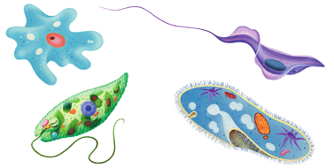

¿Qué tienen en común los organismos pertenecientes al reino protistas que los hace distintos a los de los demás reinos?
Los organismos pluricelulares del reino protistas no poseen tejidos diferenciados. Explica esta afirmación.
¿Qué tienen en común y en qué se diferencian las algas pluricelulares y unicelulares del reino protistas?
Las algas presentan nutrición autótrofa gracias a la clorofila, que les permite realizar la fotosíntesis. Sin embargo, el color verde de la clorofila es evidente en las algas verdes, pero no en las algas pardas y rojas.
Investiga sobre este hecho y explícalo en tu cuaderno. Indica las fuentes consultadas.
Busca imágenes de algas de cada grupo, según su color, indicando una característica de cada una de ellas y expónlas en clase.
Cada vez más frecuente el uso de algas como parte de nuestra alimentación. ¿Alguna vez has comido algas? ¿Te han gustado?
Busca una receta que entre sus ingredientes tenga algas y compártela con el resto de la clase. ¿Qué tipo de alga se usa? Cita las fuentes consultadas.
Además del uso culinario, ¿cuáles son otros usos de intereses con las algas?
Indica cuáles de las siguientes afirmaciones sobre las funciones de las algas son correctas:
La nutrición de las algas es autótrofa quimiosintética.
Su reproducción puede ser sexual o asexual.
Son capaces de responder a estímulos, por ejemplo la luz y la salinidad.
Cuando se reproducen sexualmente pueden hacerlo por fragmentación o por esporas.
¿Por qué se suele decir que las algas mantienen los ecosistemas acuáticos?
Las algas pluricelulares suelen observarse en las playas como restos de arribo. La inmensa mayoría de ellas no viven libres en el agua, sino fijas en el sustrato, formando parte del bentos, que es el conjunto de organismos que habitan los fondos.
Emite una hipótesis que explique el hecho de que, a veces, esas algas terminen en las playas.
Las algas bentónicas suelen darse hasta en profundidades de 180 m. ¿Qué factor hace que no sea posible encontrar algas a mayor profundidad? ¿Por qué?
Lee el siguiente texto sobre la importancia de las cadenas alimentarias en el mar. Averigua el significado de los términos que no conozcas y explícalos.
Las algas unicelulares de las clases dinoflageladas y diatomeas forman la parte principal del fitoplancton marino y constituyen los productores primarios más importantes.
Robert Koch (1843-1910) fue un bacteriólogo alemán que en 1882 descubrió el bacilo que provoca la tuberculosis. Fue el primero en que sus escritos hizo referencia al uso de cultivos bacterianos en agar-agar, por lo que se le atribuyó su autoría. Pero la idea no fue suya, sino de la esposa y colaboradora de uno de los médicos que trabajaban con el investigador. Se trataba de la norteamericana Fanny Hesse (1850-1934), quien conocía las propiedades de esa sustancia por su uso culinario como espesante y se le ocurrió que podría servir para hacer cultivos microbianos más sólidos y duraderos.
Busca información sobre el origen y usos del agar-agar. Cita las fuentes consultadas.
En la actualidad, las algas se explotan económicamente, tanto recolectándolas como cultivándolas. Haz una relación de las ventajas y los inconvenientes de cada tipo de actividad.
¿En qué se parecen y en qué se diferencian los protozoos a las algas?
Clasifica los siguientes organismos en protozoos y algas. Razona tus elecciones.

Microorganismos
Investiga el significado etimológico del término protozoa y explica a qué se debe esta denominación.
¿Es correcto afirmar que los protozoos son inmóviles? Razona tu respuesta.
Euglena gracilis es un organismo unicelular flagelado que, en condiciones normales, es autótrofo y realiza la fotosíntesis. Cultivado en la oscuridad, pierde la clorofila y se nutre de forma heterótrofa, pero, cuando se le devuelve la luz, recupera su capacidad de hacer la fotosíntesis. Además, en la naturaleza hay algunas variantes de la misma especie que carecen de cloroplastos y siempre son heterótrofos. Si tuvieses que clasificar a esta especie dentro de los reinos protistas, ¿la incluirías en el grupo de las algas o en el de los protozoos? Argumenta.